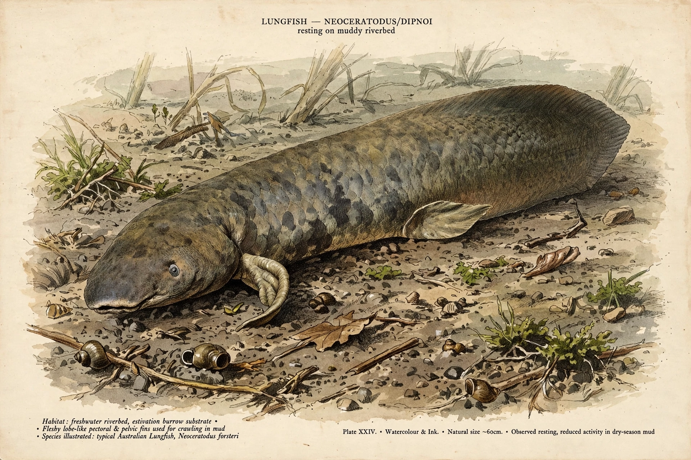

| Lobe-finned fish | |
|---|---|
| Scientific name | Sarcopterygii |
| Domain | Eukaryota |
| Kingdom | Animalia |
| Phylum | Chordata |
| Class | Sarcopterygii |
| Living groups | Coelacanths, lungfish, and tetrapods (including humans) |
| Fossil range | Silurian – present (~425 million years ago to today) |

Lobe-finned fishes, class Sarcopterygii, are a group of bony fishes characterised by fleshy, lobed, paired fins, which are joined to the body by a single bone. The fins of lobe-finned fishes differ from those of all other fish in that each is borne on a fleshy, lobe-like, scaly stalk extending from the body. Because tetrapods (four-limbed vertebrates, including amphibians, reptiles, birds and mammals) evolved from lobe-finned ancestors, Sarcopterygii in modern cladistic usage includes all tetrapods; the living non-tetrapod members are just eight species: two coelacanths and six lungfish.
Sarcopterygians appeared in the Silurian, over 420 million years ago, and diversified widely in the Devonian period. Coelacanths (Actinistia) were a large marine group once thought to have died out with the dinosaurs until Latimeria was found alive in 1938. Lungfish (Dipnoi) were once globally distributed freshwater predators; today they survive only in Africa, South America and Australia. In the Late Devonian, a lineage of sarcopterygians (the tetrapodomorphs, including Tiktaalik) evolved limbs with digits, giving rise to all land vertebrates. Phylogenetic studies show lungfish are the closest living fish relatives of tetrapods.
Features include enamelled teeth, a two-part cranium with a hinge joint (in primitive forms), and paired fins whose internal skeleton contains a single proximal bone (homologous to the humerus and femur) followed by two bones (homologous to radius/ulna and tibia/fibula). Lungfish possess lungs homologous to those of tetrapods and can aestivate in mud during droughts.